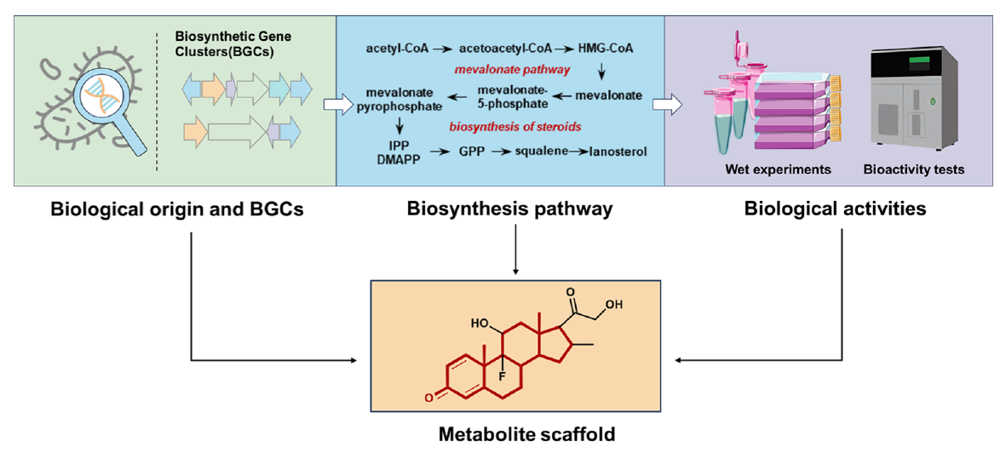
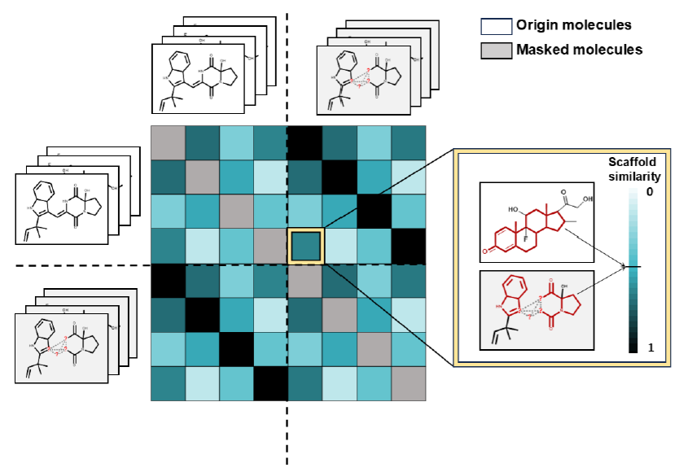
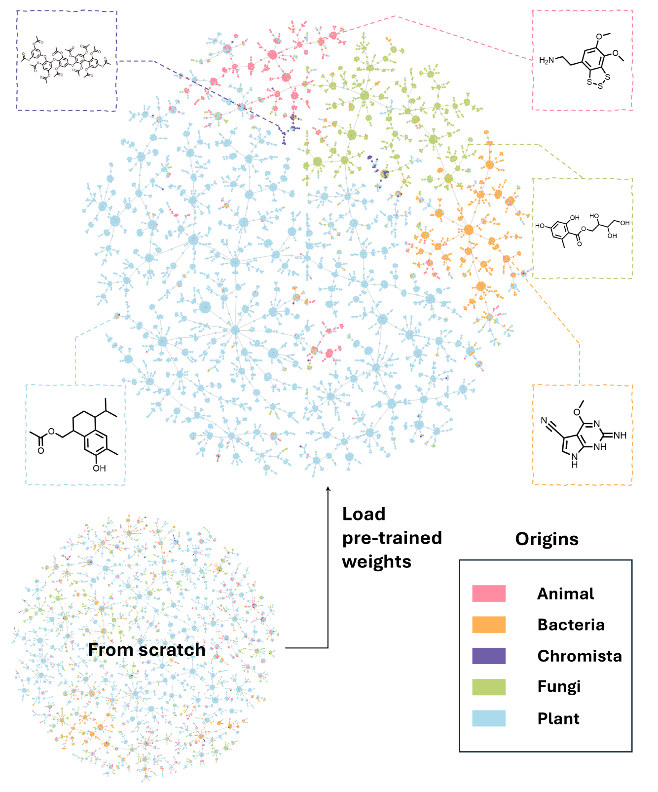
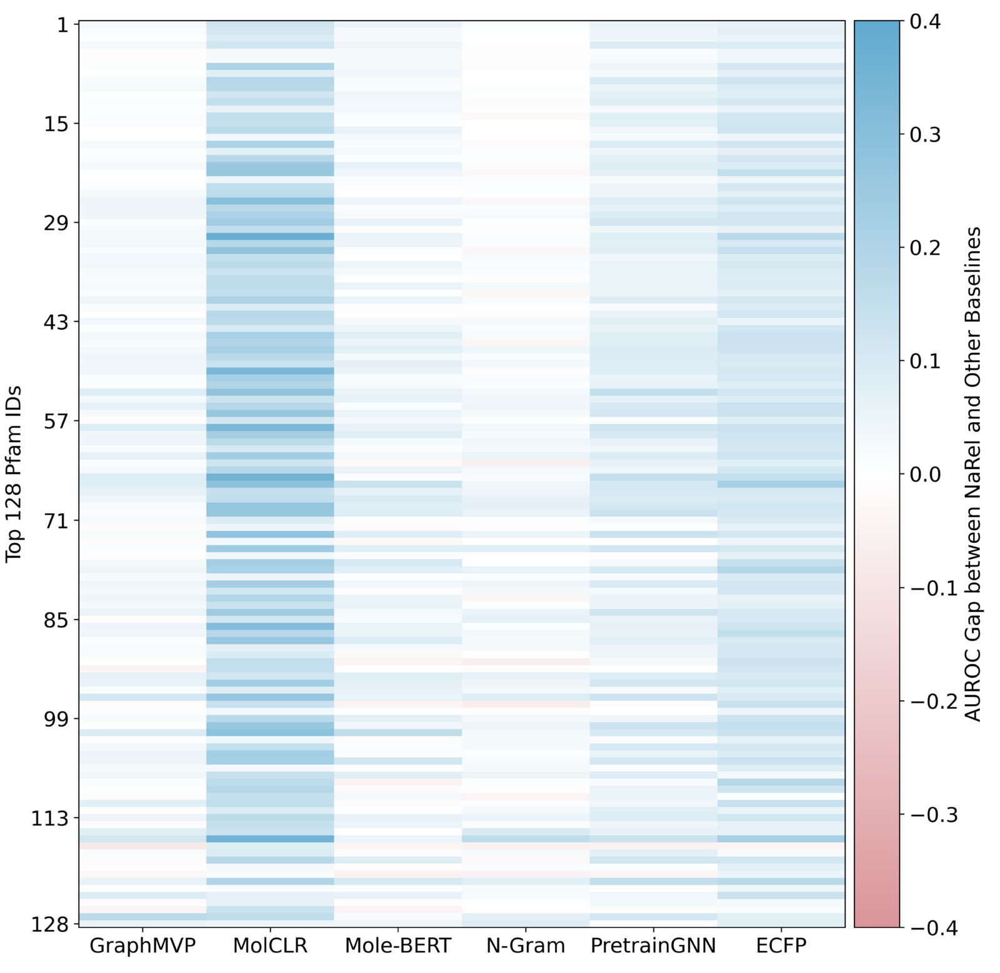
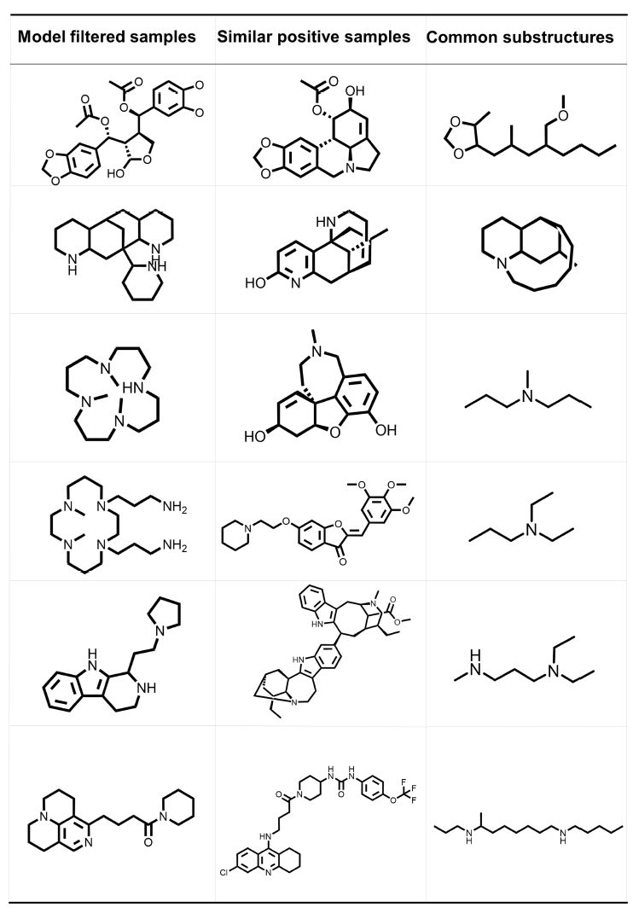

NaFM: Pre-training a Foundation Model for Small-Molecule Natural Products (Ding et al. 2025)
Why did I choose this paper?
- Was curious about what a “Foundation Model” in Natural Product Chemistry would be exactly, what could it be used for?
Abstract
- Statement: existing deep learning methods for Natural Products (NP) research primarily rely on supervised learning approaches designed for specific downstream tasks
- Statement 2: one-model-for-a-task paradigm often lacks generalizability and leaves significant room for performance improvement
- Statement 3: existing models for chemical problems do not work well for NP
- This article describes NaFM (“Natural product Foundation Model”), a “pre-trained foundation model” for natural products
- Pre-training was done using masked graph learning and contrastive learning (see below)
- “Validation” of the approach was done in 3 experiments using NaFM as a (kind-of) encoder and a Multi-Layer Perceptron (MLP) as a (kind-of) decoder to solve the following tasks:
- NP taxonomy classification
- Predicting biological sources of NP
- Predicting bioactivity of NP
Introduction
- NP-based drug discovery/design with traditional methods (NP extracts from (cultivated) organisms, bioactivity-guided fractionation, target validation, structure elucidation, etc.) is costly and time-consuming
- With today’s computing resources and databases like COCONUT, LOTUS, and Supernatural II, NP drug discovery can be sped up, perspectively
- Prior work:
- (Xu et al. 2024): predicting kingdom of NP origin species
- (Stokes et al. 2020): predicting antibiotic activities
- (Kim et al. 2021): predicting structural classes and source pathways of NP
- Mostly use traditional fingerprints like Morgan/ECFP (Extended Connectivity FingerPrints)
- “these methods could achieve satisfying performance but always suffer when applied to out-of-distribution test data or less-related downstream tasks.”
- They exclusively employ supervised learning but this is problematic because we do not have a lot of labelled data, and it is often biased (e.g. plant NP are usually overrepresented in NP databases)
- Pre-training on unlabelled data:
- Historically, often done with SMILES as data, RNN or Transformers as model architectures, and masked language modelling as a pre-training strategy
- Lately, Graph Neural Networks (GNN) as model architectures, hence graphs as input data, and pre-training strategies specifically for molecular graphs seem promising
- But no pre-trained foundation model for NP has been developed so far
- Some thoughts on NP structures in general:
- NP structures in general are more complex and diverse than synthetic compounds, have specific scaffolds (= ring systems) and functional groups; which is why models trained on synthetic compounds usually struggle with NP
- But the advantage of NP structures is that they are “evolved”, i.e. they often carry “preserved” substructures like scaffolds which depend on / relate to the source pathway or source organism
- And these scaffolds are related to the exhibited bioactivity
- A NP-specific pre-training strategy should therefore focus on scaffolds

- Contrastive learning, masked learning and activity cliffs
- Contrastive learning: in the learned embeddings, similar structures should have similar embeddings, and dissimilar structures should have dissimilar embeddings
- Masked learning: substructures are “masked”, i.e. bond or atom attributes are omitted and have to be predicted by the model based on the context
- Existing approaches use the masking of structures simply as data augmentation and define similarity/dissimilarity for contrastive learning with pairs of the original structures
- Activity cliffs: very similar structures can have completely different (bio-)activities
- Activity cliffs contradict the principles of contrastive learning
- Idea pursued to avoid this here: use the masked structures as “similar” structures to their original, unmasked structures
- Also: mask whole substructures, not just single atoms and bonds, to make pre-training more complex and hence more successful
Model Architecture and Pre-Training
- NaFM: a pre-training framework (“pre-trained foundation model”?) specific to NP
- Two novel pre-training approaches: scaffold-subgraph reconstruction and scaffold-aware contrastive learning.
![Figure 1 B. Details of scaffold-subgraph reconstruction. First, a subgraph is randomly selected from the scaffold, consisting of multiple atoms and chemical bonds. In the subgraph, both node and edge attributes are masked, and all nodes within the subgraph are fully connected (i.e., expanded into a fully connected graph), thereby masking the topological information. During the reconstruction process, the model needs to predict both node and edge attributes, while also distinguishing between real edges and those artificially added virtual edges. source: (Ding et al. 2025) CC-BY 4.0](NaFM_2025_images/Fig1b.png)
- scaffold-subgraph reconstruction:
- (not really evident in the figure, but) masking employed only to substructures of the scaffold of an NP!
- atom information (elements / atom types, formal charge, chirality) is masked
- bond information (multiplicity, direction (stereochemistry)) is masked
- topological information is masked, all bonds in the substructure are removed and instead, the atoms become fully connected

- scaffold-aware contrastive learning:
- For every original input structure, its masked form is set as positive example of a “similar” structure that should be encoded similarly
- the other molecules and their masked forms are set as negative examples, so “dissimilar” structures that should be encoded dissimilarly
- scaffold similarity is used as a metric for similarity of the complete structures
- cosine similarity between the MACCS fingerprints of scaffolds is incorporated into the contrastive learning loss function
- This way, scaffold-subgraph reconstruction and scaffold-aware contrastive learning are combined
![Figure 1 A. Overview of NaFM pre-training. After the natural product molecule undergoes scaffold-aware masking, both the masked and unmasked information are simultaneously input into a multi-layer Graph Isomorphism Network. The masked information is then processed through a projection head to predict the masked atom attributes, bond attributes, and topological information. Meanwhile, the masked and unmasked information passes through a pooling function and is used for scaffold-aware contrastive learning. source: (Ding et al. 2025) CC-BY 4.0](NaFM_2025_images/Fig1a.png)
- Training data: COCONUT NP (0.6 mio molecules) ((Chandrasekhar et al. 2024))
- Model architecture: Graph Neural Network (GNN) / Graph Isomorphism Network (GIN) (6 layers, hidden dimensionality of 512)
- Molecule goes in once as original structure and once as scaffold-masked structure
- Average pooling operation as the readout function to extract a global molecular representation of 1024 dimensions
- Projection head (3 Multi-Layer Perceptrons (MLP)) has to reconstruct/predict the masked properties (atom properties, bond properties, topologies)
- a MLP has to embed the original structures and their masked forms (in 256 dimensions) so that original-masked pairs are seen as similar and other structures as dissimilar, based on scaffold similarity (scaffold-aware contrastive learning)
General Down-stream Fine-tuning Approach
- Original contrastive learning head and reconstruction head are replaced with a randomly initialized MLP
- For all pre-trained baselines (other models that NaFM is compared to below) the same settings as described above are used
- For baselines trained from scratch, their default configurations are used.
Performance Evaluation on Downstream Tasks
NP Taxonomy Classification
- Data: NPClassifier dataset ((Kim et al. 2021))
- Biosynthetic pathway (7 types), super class (70), and class (563) annotations of 77,000 NP structures
- First experiment on class level
- Multiple pre-trained (general, not NP-specific!) molecular models were used as baselines
- Additionally, Extended Connectivity Fingerprints (ECFP) were used as baseline (authors state that they are currently the most popular choice for encoding NP structures)
- All baseline models, ECFP, and NaFM were used for training a MLP as described above for NP classification
- Results in Table 1
- NaFM shows top scores for all dataset sizes, especially for small datasets
Table 1 The AUPRC results for natural product taxonomy classification compared to other baselines.
| Training samples per Class | 4 | 8 | 16 | 24 | 40 | 64 |
|---|---|---|---|---|---|---|
| N-Gram | 44.72 ± 1.91 | 56.61 ± 0.66 | 66.36 ± 1.57 | 71.11 ± 0.77 | 73.34 ± 1.14 | 75.77 ± 0.54 |
| PretrainGNN | 44.83 ± 0.82 | 61.85 ± 0.78 | 75.76 ± 0.62 | 80.50 ± 0.17 | 85.31 ± 0.36 | 87.82 ± 0.13 |
| D-MPNN | 46.63 ± 0.23 | 60.88 ± 0.48 | 75.73 ± 0.12 | 80.96 ± 0.24 | 86.64 ± 0.44 | 89.23 ± 0.79 |
| MolCLR | 45.76 ± 1.98 | 65.80 ± 1.51 | 78.14 ± 1.08 | 83.20 ± 0.74 | 85.56 ± 0.11 | 88.22 ± 0.34 |
| Mole-BERT | 66.32 ± 1.23 | 73.39 ± 0.66 | 78.25 ± 0.45 | 80.83 ± 0.51 | 83.57 ± 0.59 | 85.69 ± 0.70 |
| ECFP | 69.17 ± 0.19 | 78.21 ± 0.79 | 83.82 ± 0.37 | 86.28 ± 0.49 | 88.52 ± 0.48 | 89.75 ± 0.45 |
| GraphMVP | 64.50 ± 0.74 | 78.41 ± 0.09 | 85.71 ± 0.43 | 87.88 ± 0.26 | 89.72 ± 0.45 | 91.07 ± 0.43 |
| NaFM | 70.10 ± 0.92 | 79.89 ± 0.07 | 87.37 ± 1.51 | 89.15 ± 0.22 | 90.77 ± 0.26 | 91.75 ± 0.47 |
- Second experiment comparison to NPClassifier
- NPClassifier was taken as-is, NaFM was fine-tuned as described above
- comparison on pathway and super-class levels
- Results in Figure 2 (PR AUC: Area Under the Curve where x is recall and y is precision)
- The fine-tuned NaFM outperforms NPClassifier
- Especially for amino acids and peptides (pathway) and Carotenoids (C45), Tetramate alkaloids, Peptide alkaloids, and Anthranilic acid alkaloids (super-classes)
- The gap in the recognition of γ-lactam-β-lactones can be attributed to the limited data for this category, with only 8 instances out of 78,000 data points
![Figure 2. The bar plots illustrate the models’ performance comparison of NaFM and NPClassifier on various superclass categories (a) and biosynthetic pathways (b) including Carbohydrates, Amino Acids and Peptides, Alkaloids, Terpenoids, Shikimates and Phenylpropanoids, Polyketides, and Fatty Acids in terms of AUPRC. The gray segments indicate the shared performance (minimum AUPRC) and the light blue/orange segments highlight the additional AURPC achieved by NaFM and NPClassifier beyond each other, respectively. Higher values indicate better model performance. source: (Ding et al. 2025) CC-BY 4.0](NaFM_2025_images/Fig2.png)
Prediction of Source Organism Kingdom
- Based on LOTUS ((Rutz et al. 2022))
- 130,000 data pairs of NP structure and source organism (and literature reference)
- NaFM model was fine-tuned to predict kingdom of NP-producing species (i.e. animals, bacteria, chromista, fungi, and plants)
- Figure 3 shows the resulting embeddings plotted using TMAP (Probst and Reymond 2020)
- NaFM appears to be able to separate the NP of the different kingdoms within the representation space
- Kingdom representative structures were obtained by performing a cluster analysis and giving the representative of the biggest cluster, respectively
- Without the pre-training weights (“from scratch”), the model is not able to separate the classes (larger figure available in SI)

Prediction of NP-producing Biosynthetic Gene Cluster (BGC) and protein family
- dataset a combination of MIBiG (Minimum Information about a Biosynthetic Gene cluster database, (Terlouw et al. 2023)) and Pfam (Protein families database, (Mistry et al. 2021)): 2,000 bacterial and fungal BGCs and their corresponding metabolite structures, plus protein families encoded by the respective BGC
- Again, NaFM, ECFP, and baseline molecular pre-trained models were fine-tuned on the task of predicting the producing protein family based on an NP structure
- Results in Figure 4 for the top 128 protein families, NaFM again outperforms all others (AUROC: Area Under ROC curve)
- No idea why they call it NaRel instead of NaFM here…
- e.g. ID 65 and 115 are protein families are known to be highly conserved

Predicting bioactivity for specific targets
- data: human protein targets and HIV type- 1 reverse transcriptase activity data from the NPASS natural product activity database
- As before, NaFM and the baseline models were fine-tuned on this data
- Results in Table 2
- NaFM surpasses all baselines, except for N-Gram on HIV type-1 reverse transcriptase
Table 2 The RMSE results for natural product bioactivity regression compared to other baselines.
| Target Name | Number of samples | N-Gram | PretrainGNN | D-MPNN | MolCLR | Mol-BERT | ECFP | GraphMVP | NaFM |
|---|---|---|---|---|---|---|---|---|---|
| PTP1B | 612 | 0.8493 ± 0.2623 | 0.8652 ± 0.2110 | 0.8577 ± 0.2165 | 0.9912 ± 0.2467 | 0.8624 ± 0.0732 | 1.1409 ± 0.2281 | 1.8865 ± 0.1303 | 0.8243 ± 0.1960 |
| AChE | 341 | 1.3774 ± 0.3995 | 1.5462 ± 0.2265 | 1.2881 ± 0.1992 | 1.1507 ± 0.1683 | 1.2938 ± 0.3615 | 1.3721 ± 0.0703 | 2.8140 ± 0.3649 | 1.1227 ± 0.1604 |
| COX-2 | 190 | 1.0022 ± 0.3192 | 1.7231 ± 0.3754 | 1.0272 ± 0.2468 | 0.9399 ± 0.1705 | 1.0529 ± 0.1536 | 1.2718 ± 0.1531 | 3.0341 ± 0.6418 | 0.9239 ± 0.1721 |
| HIV type-1 RT | 186 | 1.0606 ± 0.1613 | 1.5210 ± 0.2606 | 1.1826 ± 0.1683 | 1.2649 ± 0.1353 | 1.4348 ± 0.1398 | 1.5446 ± 0.1133 | 2.7829 ± 0.1195 | 1.0802 ± 0.1506 |
| Tyrosinase | 186 | 0.7822 ± 0.1408 | 1.6957 ± 0.2915 | 0.8206 ± 0.1891 | 0.9165 ± 0.2820 | 1.0440 ± 0.2569 | 1.2553 ± 0.0985 | 3.3965 ± 0.3437 | 0.6927 ± 0.2828 |
| CYP3A4 | 178 | 0.7846 ± 0.2037 | 1.4157 ± 0.2923 | 0.6946 ± 0.1415 | 0.7072 ± 0.1362 | 0.9377 ± 0.1873 | 1.0439 ± 0.1244 | 3.0817 ± 0.2720 | 0.6922 ± 0.1326 |
| MRP4 | 177 | 0.2747 ± 0.0846 | 1.6869 ± 0.2476 | 0.2399 ± 0.0603 | 0.2321 ± 0.0847 | 0.5190 ± 0.0645 | 1.4682 ± 0.2422 | 3.5723 ± 0.4337 | 0.2265 ± 0.0921 |
| COX-1 | 140 | 0.9529 ± 0.1643 | 2.6831 ± 0.2056 | 0.9405 ± 0.1414 | 0.9574 ± 0.1655 | 1.4542 ± 0.3456 | 1.1965 ± 0.1850 | 3.0083 ± 0.2802 | 0.9286 ± 0.1342 |
- Second experiment in this area:
- acetylcholinesterase(AChE) as the target
- data: AChE IC50 data from the NPASS database
- NaFM model is fine-tuned on this data
- Fine-tuned model is used to predict AChE activity for all COCONUT NP
- The 600 molecules with the best predicted activity are tested in virtual screening (docking)
- as control, 600 randomly chosen NP are also tested
- Figure 5 a: docking scores for the two groups
- the two distributions are significantly different, the NP with predicted activity are significantly better than the randomly chosen ones
- Model-selected NP scores have a higher mean and lower variance
![Figure 5a. Docking scores of model ranked top 0.1% (approximately 600 molecules) of acetylcholinesterase inhibitors, along with 600 randomly selected molecules. The histogram and distribution of docking scores with acetylcholinesterase are shown in the figure. Orange represents the model-selected group, while blue represents the random group. The x-axis represents the docking score, and the y-axis represents frequency. A lower docking score (more left-shifted distribution) indicates higher inhibitory activity. Docking was performed using Schrödinger Maestro, with detailed settings provided in the Supplementary section 1.3. source: (Ding et al. 2025) CC-BY 4.0](NaFM_2025_images/Fig5a.png)
- Figure 5c shows some COCONUT NP with high model and docking scores, alongside the most structurally similar NP from the fine-tuning set (NPASS)
- demonstrated ability of the model to generalise or find novel actives

Conclusion
- proposed NaFM, a foundation model for small molecule natural products
- Generated using novel pre-training strategies
- NaFM has been evaluated across a range of tasks, including upstream genome mining, biological source identification, structural classification, metabolic pathway prediction, and activity prediction and screening.
- On most of the benchmarks, NaFM outperforms both traditional molecular fingerprints and deep-learning based pre-training frameworks
- It is expected that NaFM can accelerate the NP drug discovery process in multiple stages
Personal comments / questions to discuss
- There is no code available, apparently; sad
- Larger text sections, e.g. the abstract, are quite hard to understand, i.e. there are many “nice” words but no details
- Is the presented model really a “foundation model” and not rather an “encoder”?
References
Chandrasekhar, Venkata, Kohulan Rajan, Sri Ram Sagar Kanakam, Nisha Sharma, Viktor Weißenborn, Jonas Schaub, and Christoph Steinbeck. 2024. “COCONUT 2.0: A Comprehensive Overhaul and Curation of the Collection of Open Natural Products Database.” Nucleic Acids Research, November, gkae1063. https://doi.org/10.1093/nar/gkae1063.
Ding, Yuheng, Yusong Wang, Bo Qiang, Jie Yu, Qi Li, Yiran Zhou, and Zhenmin Liu. 2025. “NaFM: Pre-Training a Foundation Model for Small-Molecule Natural Products.” https://doi.org/10.48550/ARXIV.2503.17656.
Guo, Jeff, and Philippe Schwaller. 2024. “It Takes Two to Tango: Directly Optimizing for Constrained Synthesizability in Generative Molecular Design.” arXiv. https://doi.org/10.48550/ARXIV.2410.11527.
Kim, Hyun Woo, Mingxun Wang, Christopher A. Leber, Louis-Félix Nothias, Raphael Reher, Kyo Bin Kang, Justin J. J. Van Der Hooft, Pieter C. Dorrestein, William H. Gerwick, and Garrison W. Cottrell. 2021. “NPClassifier: A Deep Neural Network-Based Structural Classification Tool for Natural Products.” Journal of Natural Products 84 (11): 2795–2807. https://doi.org/10.1021/acs.jnatprod.1c00399.
Landrum, Gregory A., Jessica Braun, Paul Katzberger, Marc T. Lehner, and Sereina Riniker. 2024. “Lwreg: A Lightweight System for Chemical Registration and Data Storage.” Journal of Chemical Information and Modeling 64 (16): 6247–52. https://doi.org/10.1021/acs.jcim.4c01133.
Mistry, Jaina, Sara Chuguransky, Lowri Williams, Matloob Qureshi, Gustavo A Salazar, Erik L L Sonnhammer, Silvio C E Tosatto, et al. 2021. “Pfam: The Protein Families Database in 2021.” Nucleic Acids Research 49 (D1): D412–19. https://doi.org/10.1093/nar/gkaa913.
Orsi, Markus, and Jean-Louis Reymond. 2024. “One Chiral Fingerprint to Find Them All.” Journal of Cheminformatics 16 (1): 53.
Probst, Daniel, and Jean-Louis Reymond. 2020. “Visualization of Very Large High-Dimensional Data Sets as Minimum Spanning Trees.” Journal of Cheminformatics 12 (1): 12. https://doi.org/10.1186/s13321-020-0416-x.
Rutz, Adriano, Maria Sorokina, Jakub Galgonek, Daniel Mietchen, Egon Willighagen, Arnaud Gaudry, James G Graham, et al. 2022. “The LOTUS Initiative for Open Knowledge Management in Natural Products Research.” eLife 11 (May): e70780. https://doi.org/10.7554/eLife.70780.
Stokes, Jonathan M., Kevin Yang, Kyle Swanson, Wengong Jin, Andres Cubillos-Ruiz, Nina M. Donghia, Craig R. MacNair, et al. 2020. “A Deep Learning Approach to Antibiotic Discovery.” Cell 180 (4): 688–702.e13. https://doi.org/10.1016/j.cell.2020.01.021.
Terlouw, Barbara R, Kai Blin, Jorge C Navarro-Muñoz, Nicole E Avalon, Marc G Chevrette, Susan Egbert, Sanghoon Lee, et al. 2023. “MIBiG 3.0: A Community-Driven Effort to Annotate Experimentally Validated Biosynthetic Gene Clusters.” Nucleic Acids Research 51 (D1): D603–10. https://doi.org/10.1093/nar/gkac1049.
Xu, Qisong, Alan K. X. Tan, Liangfeng Guo, Yee Hwee Lim, Dillon W. P. Tay, and Shi Jun Ang. 2024. “Composite Machine Learning Strategy for Natural Products Taxonomical Classification and Structural Insights.” Digital Discovery 3 (11): 2192–2200. https://doi.org/10.1039/D4DD00155A.